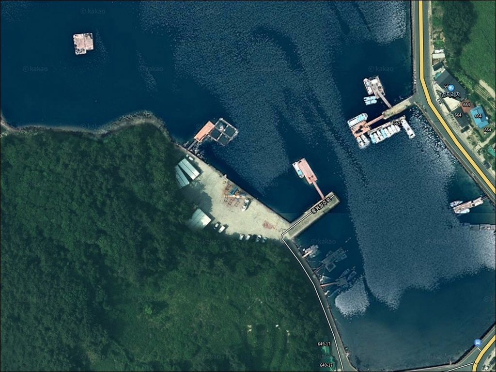
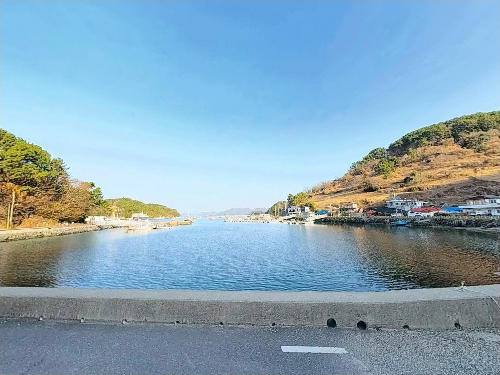
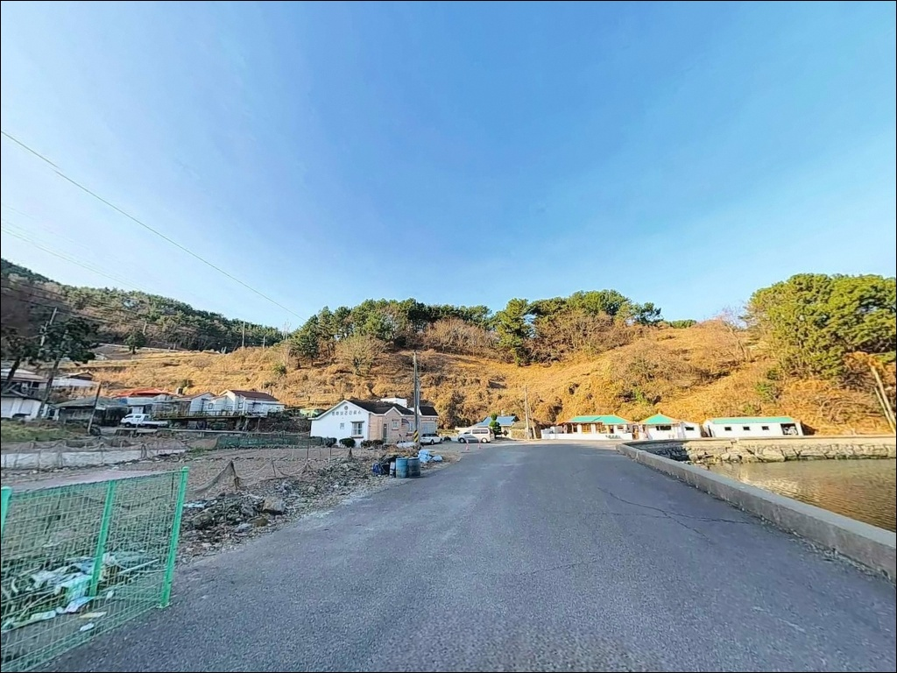
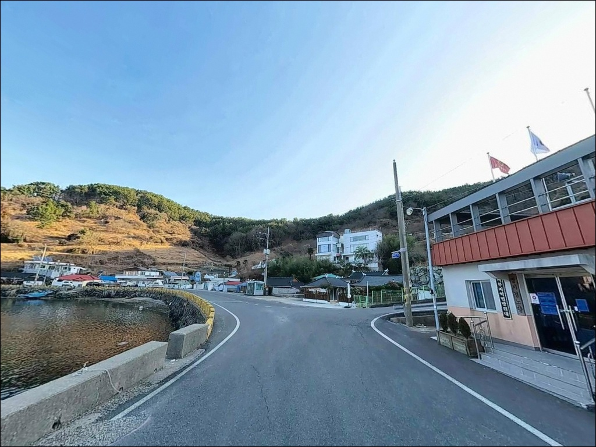
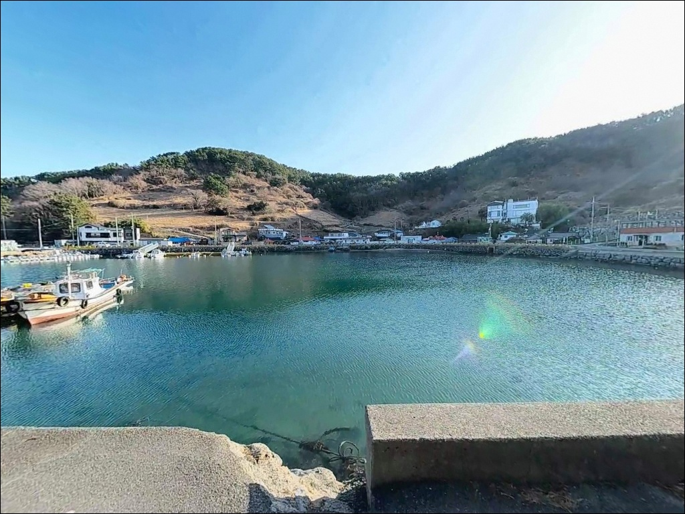
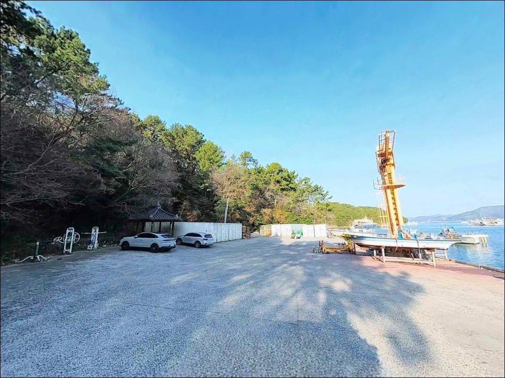
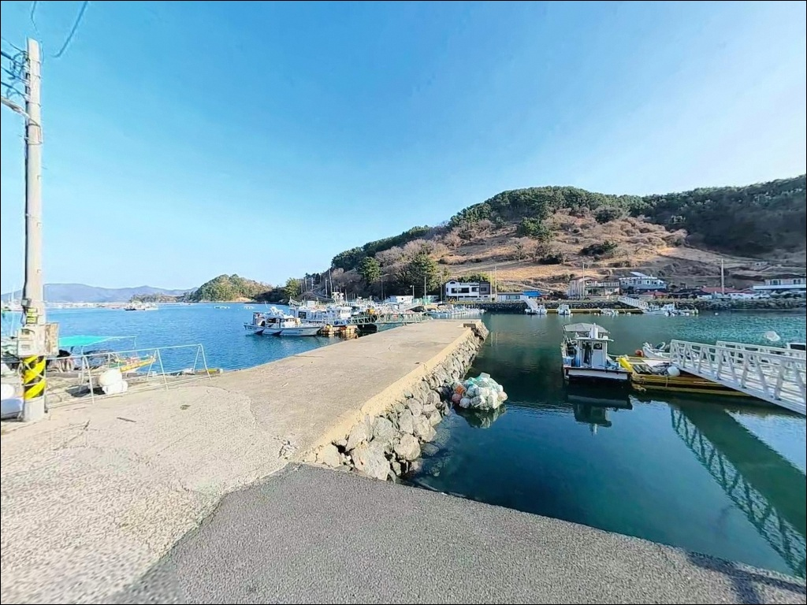
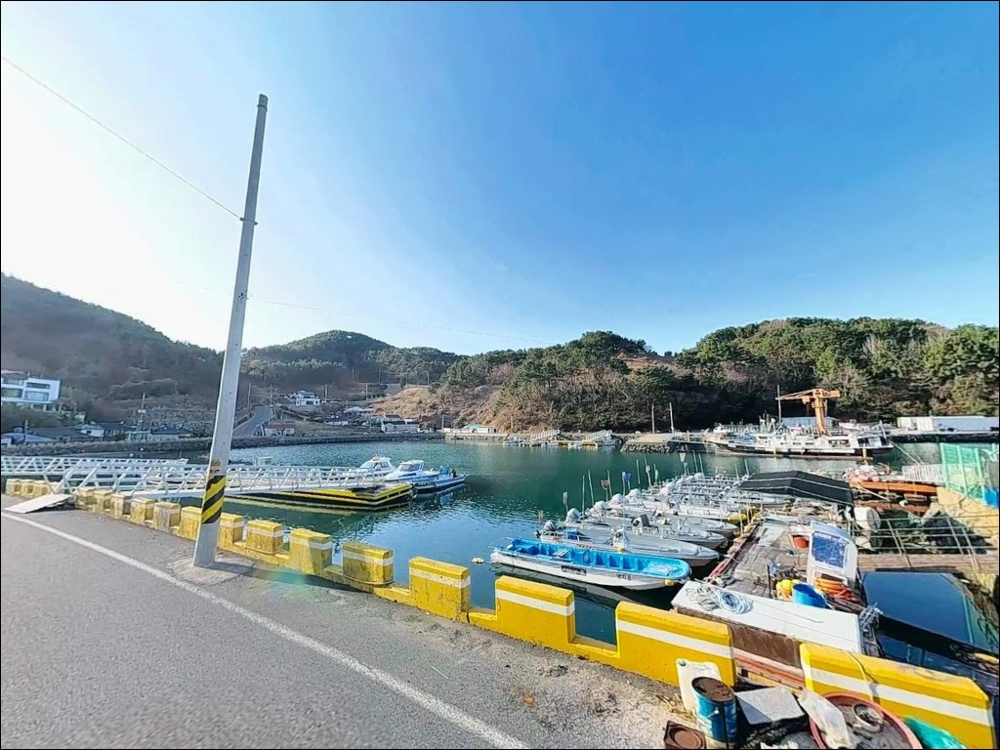
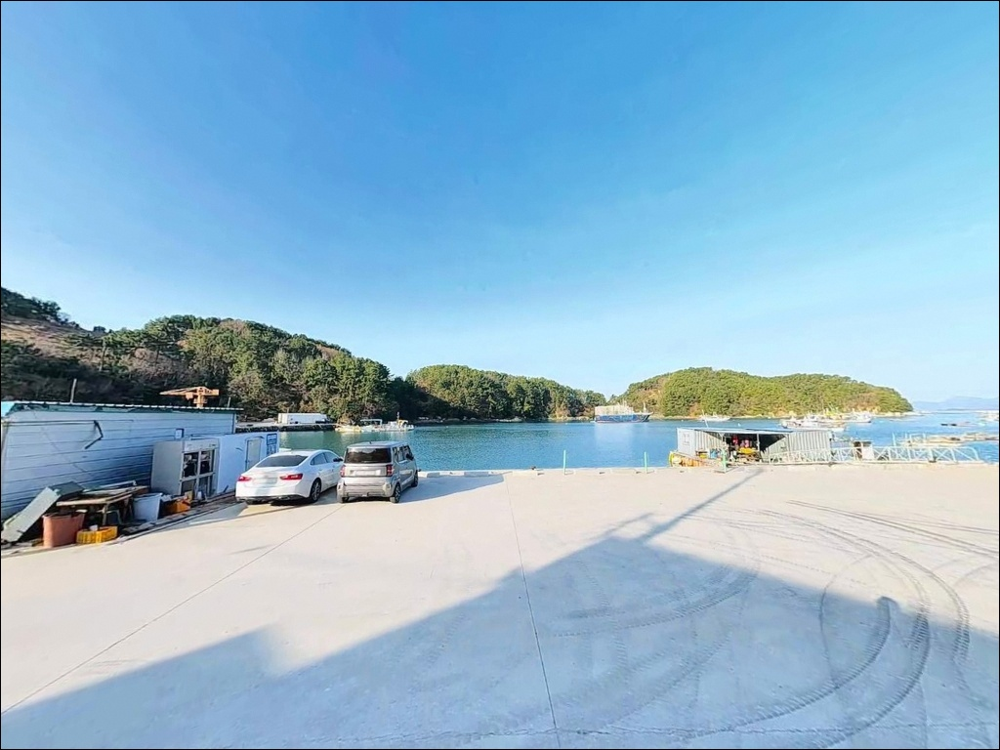

진입로 회차 막히는 통영 명지항, 선착장 진입 전 도로 폭 확인
이 페이지에는 광고(제휴 링크 포함)가 있으며, 광고 링크를 통해 구매하면 운영자가 판매 수익 또는 수수료를 받을 수 있습니다. 포인트 사진: 카카오맵 스카이뷰·로드뷰. 이 페이지의 지도·사진 이미지는 카카오맵의 실제 서비스 이미지와 다를 수 있습니다.


포인트 안내
명지항
경남 통영시 산양읍 풍화리 1556-4
풍화리 마을 진입로는 왕복 1차선 수준의 좁은 구간이 포함된 도로입니다.
대형 SUV나 짐을 가득 실은 차량이라면
선착장에 도착한 뒤 회차 공간이 부족해
다시 긴 거리를 후진해야 하는 상황이 생깁니다.
출발 전 위성지도로 진입로 폭과
회차 가능 지점을 먼저 확인하는 것이
이 포인트 방문의 첫 번째 조건입니다.
이 글은 명지항의
진입 동선, 차박 여건, 낚시 방식별 여건,
대안 포인트 동선을 중심으로 정리합니다.
조황 단정이나 특정 어종 보장은
이 글의 범위에 포함되지 않습니다.

1. 진입 동선과 차량 접근 여건
명지항은 통영 미륵도를 순환하는 풍화일주로에서
명지마을 방면으로 진입하는 구조입니다.
풍화일주로 자체는 포장된 해안 순환도로이지만,
마을 진입로 구간에서 도로 폭이 왕복 1~1.5차선 수준으로
좁아지는 구간이 존재합니다.
캠핑카·1톤 이상 트럭은 진입이 어렵고,
SUV 기준으로도 선착장 직전 구간에서
조심해야 하는 편입니다.
선착장 직전 구간에 비포장 또는 준포장 구간이
포함되어 있을 수 있어
우천 후 방문 시에는 노면 상태를 추가로 확인해야 합니다.
급경사 구간은 없으나
회차 공간이 제한적이어서
진입 전 위성지도 확인이 필수입니다.
마을 어귀나 도로 갓길 수준의 공간에서
방향을 잡아야 하는 구조입니다.
주차는 선착장 전면 공터와
마을 진입로 갓길 소규모 공간이 후보입니다.
어선 작업 동선을 막지 않는 자리를 먼저 찾고,
풍화일주로 분기점 인근 갓길도
주차 대안으로 활용할 수 있습니다.

2. 차박 환경과 야간 체류 여건
명지항은 한려해상국립공원 구역에 포함되어 있습니다.
국립공원 구역 내 지정 장소 외에서
야영·취사는 원칙적으로 허용되지 않습니다.
출발 전 국립공원공단 또는
통영 한려해상국립공원사무소에서
행위 허용 범위를 반드시 확인하고 가야 합니다.
마을 선착장 특성상 텐트 설치보다는
차량 내 스텔스 차박이 권장됩니다.
민가와 인접한 마을형 포구이므로
야간 엔진음·대화 소음은 최소화해야 합니다.
가로등 밀도는 높지 않은 편이어서
헤드랜턴 2개 이상 준비가 기본입니다.
선착장 주변은 어선 작업이 이른 아침부터 시작되는 편입니다.
차박 체류를 계획한다면
항 입구 또는 풍화일주로 인근 갓길 공간을
거점으로 삼는 방식이 주민 생활권과
덜 겹치는 선택입니다.


3. 주변 편의시설 및 인프라 현황
명지항 반경 3km 이내는 편의점·마트 등
상업 시설이 극히 드문 어촌 마을 연속 구간입니다.
완전 자급 체제로 진입하는 것이
현실적인 준비 방식입니다.
식수·얼음·낚시 소모품·연료는
통영 시내 또는 산양읍 삼덕 방면에서
사전에 갖추고 들어와야 합니다.
풍화일주로 226번지 인근에
장촌낚시 선외기 대여 업체가 위치합니다.
낚시마트 기능을 겸하고 있어
출조 전 현지 채비 보충 및
풍화리 일대 조황 정보 문의가 가능합니다.
이 일대 방문 전 직접 연락해 두면
포인트 선택에도 도움이 됩니다.
반경 10km권으로 이동하면
통영 시내권 대형마트·편의점·낚시 전문점이
충분한 수준으로 갖춰져 있습니다.
삼덕항 주변에 OK피싱 등
낚시 소모품 전문점이 위치해 있어
채비 보충은 이 동선을 활용하는 것이 효율적입니다.

4. 방문 전 반드시 챙겨야 할 준비사항
명지항은 한려해상국립공원 인근 해역입니다.
통영 남해안은 기상 변화가 빠른 편이어서
기상청 해상예보와 물때를 출발 당일 아침에
다시 한번 확인하는 것이 기본 조건입니다.
바다타임(badatime.com)에서
풍화리 기준 물때를 조회해
입장 타이밍을 맞추는 편이 좋습니다.
선착장 주변은 굴 껍데기와 돌바닥이 섞인 바닥 지형입니다.
밑걸림이 발생하는 구간이 있어
여분 채비를 넉넉하게 준비해야 합니다.
주변 굴·가리비 양식장 시설에
낚싯줄이 걸리지 않도록 주의해야 하며,
양식 시설 무단 접촉은 수산업법 위반입니다.
야간 낚시 시 구명조끼 착용은 필수입니다.
선착장 가로등 의존은 금물이며
헤드랜턴을 반드시 준비해야 합니다.
풍화리는 선외기 작업이 활발한 지역이라
정박한 어선 사이로 채비를 던지거나
로프·어구에 낚싯줄이 걸리지 않도록
자리 선정부터 주의해야 합니다.
출조 전 풍화리 일대 조황 검색을 먼저 해보시는 편이 좋습니다.
현지 업체나 낚시 커뮤니티에서
최신 조황을 확인하고 방문 여부를 최종 결정하는 것이
헛걸음을 줄이는 가장 현실적인 방법입니다.

5. 지형 기반 낚시 여건 분석
명지항은 미륵도 남부 풍화리 해안선 안쪽 내만 구조에
자리 잡은 소형 선착장입니다.
리아스식 해안 안쪽이라
외해의 파도와 바람 영향을 거의 받지 않는
정온한 수역이 유지됩니다.
북서풍이 강한 겨울철에도
비교적 안정적인 발판 환경이 확보되는 구조입니다.
선착장 전면 수심은 만조 기준 5~6m 안팎으로
내만 특성상 조류 세기는 약한 편이고
바닥은 펄과 돌바닥이 섞인 혼합 지형입니다.
선착장 접안부와 석축 주변 수중 구조물에
어군이 형성되는 편이어서,
발판 가까이에서의 공략이
이 포인트의 기본 전략입니다.
주변 해역에 굴·가리비 양식장이 광범위하게 분포합니다.
양식장과 선착장 석축이 만나는 경계 구간이
어류의 은신처 역할을 하는 지형이어서
경계선 주변을 집중 탐색하는 방식이 유효합니다.
이런 지형에서 기대해 볼 수 있는 어종은
볼락·붕장어·감성돔·노래미 등이며,
가을 이후 갑오징어와 호래기(내만 야간)도
기대할 수 있는 구조입니다.
최신 조황은 가기 전에 꼭 검색해 보시기 바랍니다.


낚시 방식별 여건이 달라지는 조건
명지항에서 가장 반응이 기대되는 방식은
볼락 라이트게임입니다.
선착장 보안등 또는 개인 집어등 주변으로
볼락과 전갱이가 모이는 패턴이 내만형 선착장의 특성입니다.
야간 석축 경계면 주변을
소형 지그헤드 채비로 천천히 탐색하는 방식이
이 포인트 구조에 가장 잘 맞습니다.
에깅도 이 포인트에 어울리는 방식입니다.
가을철 갑오징어와 주꾸미는
내만 바닥 펄과 석축이 만나는 구간을 좋아합니다.
저크 후 길게 스테이하는 운용 방식이
펄 바닥 지형에 적합하며,
11월 이후 호래기 시즌에도
야간 집어등을 이용한 공략이 가능한 구조입니다.
원투낚시는 선착장 전면 방향으로
가벼운 채비를 펼치는 방식으로 운용합니다.
조류가 완만한 내만 특성상
무거운 봉돌 없이도 채비 유지가 가능하고,
붕장어·감성돔·도다리 등
바닥층 어종을 기대해 볼 수 있는 구조입니다.
여러 대를 펼치는 다줄 원투가
이 지형과 잘 맞는 편입니다.

7. 대안 포인트와 플랜 B 동선
명지항 여건이 여의치 않을 때
가장 먼저 이동할 대안은
궁항방파제입니다.
명지항에서 동쪽으로 약 2.5km 거리에 있으며,
방파제 구조물이 명확하게 갖춰져 있어
루어·에깅 운용이 명지항보다 용이합니다.
같은 풍화리 내만 해역 조건을 공유하는 포인트입니다.
장촌방파제는 약 3km 거리의 두 번째 대안입니다.
풍화일주로 인근 장촌낚시 업체가 인접해 있어
현지 조황 정보를 가장 빠르게 얻을 수 있는 곳입니다.
명지항 방문 전에 이 업체에서
미리 풍화리 일대 상황을 파악하고
포인트 선택을 확정하는 동선이 효율적입니다.
차박 공간이 부족할 경우에는
풍화일주로 연선의 도로변 갓길 공간을
간헐적으로 활용하는 방식이 있으며,
보다 넓은 주차 공간을 원한다면
삼덕항 주변 주차 구역을 거점으로 삼고
낚시 포인트로 이동하는 방식이 현실적인 선택입니다.

조용한 내만 포인트,
준비를 갖춘 만큼 편안한 곳입니다
볼락 라이트게임이나 내만 에깅을 즐기는 낚시인이라면
명지항의 지형 조건은 잘 맞는 구조입니다.
화려한 조과보다는 조용히 자리를 잡고
정교하게 운용하는 방식이 어울리는 포인트이며,
인근 궁항방파제·장촌방파제와
연계 동선을 짜면 하루 일정을
효율적으로 채울 수 있습니다.
반면 편의시설 없는 어촌 마을 특성과
국립공원 구역 내 야영 제한,
좁은 진입로와 회차 제약을
불편하게 느끼는 분에게는
삼덕항이나 통영 시내권 방파제를
먼저 검토하는 편이 맞습니다.
통영 미륵도 남부 내만에서
조용한 낚시와 소박한 차박을 함께 즐기고 싶다면,
한려해상국립공원 야영 허용 여부만 사전에 확인해 두면
오래 기억에 남을 출조가 될 수 있는 곳입니다.